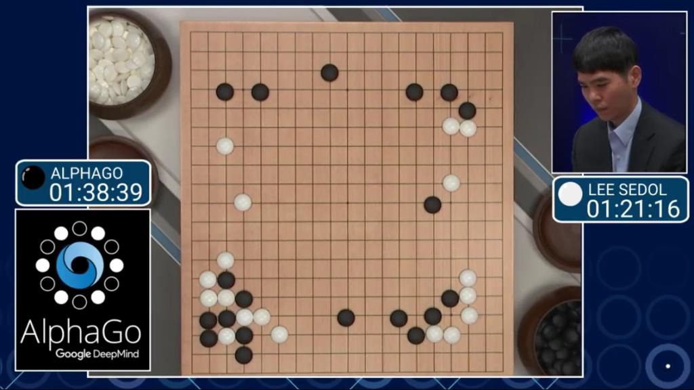
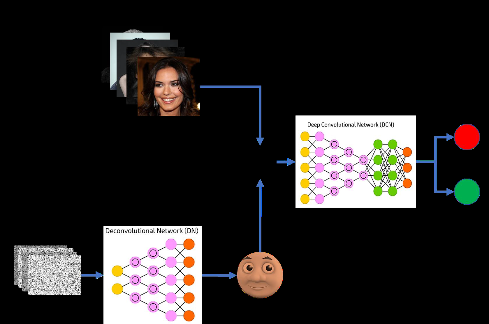
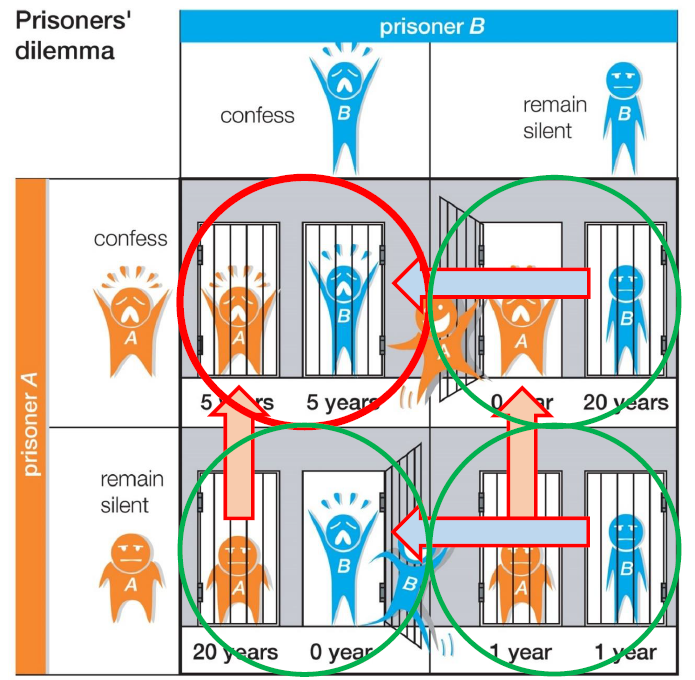
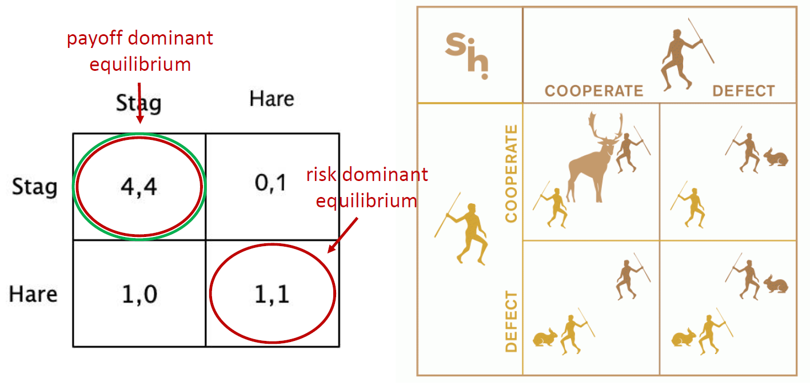
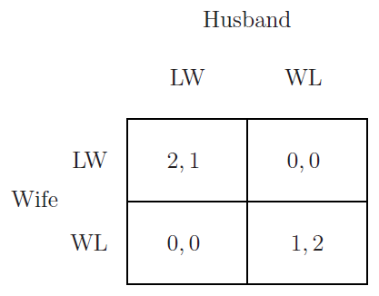
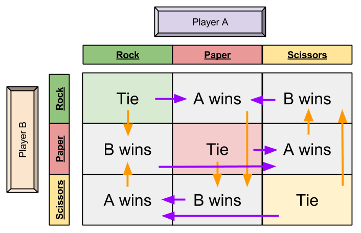
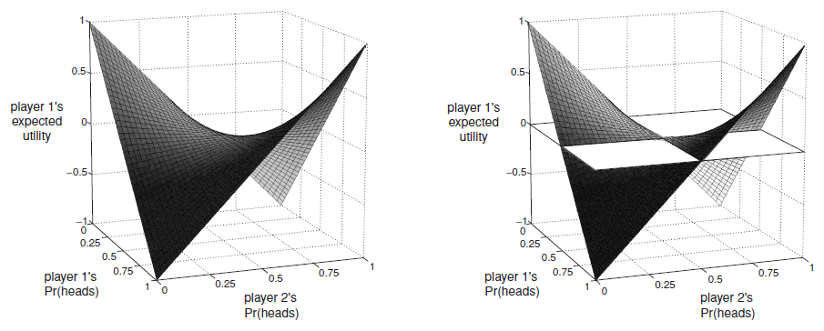

什么是博弈论？
维基百科
博弈即“Game”：2-player game、n-player game。
计算机科学中的博弈问题


统一控制调度或统一预编程无关博弈论。
博弈模型分类：
- 正则型博弈（矩阵描述）
- 拓展型博弈（决策树/博弈树）
- 其他类型
相关例子：
猜拳游戏（正则型博弈）
囚徒困境（正则型博弈）
AlphaGo（拓展型博弈）
多智能体强化（其他类型：马尔可夫博弈）
联邦学习（其他类型：主从博弈）
博弈表示方法：
一个人需要知道关于游戏的
- 玩家是谁
- 玩家可以采取哪些行动
- 每个玩家对每个行动的重视程度
- 每个玩家都知道什么
根据以上信息有两种博弈的表示
- 正则型（或策略型）博弈：上述信息用矩阵描述
- 拓展型博弈：上述信息用博弈树和信息集描述
（一）
正则型博弈
正则性博弈（Normal-form game）：(N,A,u)
- N：有限的玩家数目
- A：每个玩家的行动
- u：每个行动对应的奖励
囚徒困境
N={ Prisoner A, Prisoner B }
AA=AB={ Confess, Deny }
a=(aA=C,aB=C),a=(aA=C,aB=D),a=(aA=D,aB=C),a=(aA=D,aB=D)
u=(uA(C,C)=5,uB(C,C)=5),u=(uA(C,D)=0,uB(C,D)=20),u=(uA(D,C)=20,uB(D,C)=0),u=(uA(D,D)=1,uB(D,D)=1)
特殊的正则型博弈：
博弈纯策略：如果一个策略规定参与人在每一个给定的信息情况下只选择一种特定的行动，称为纯策略，简称“策略” ，即参与人在其策略空间中选取唯一确定的策略。
博弈混合策略：如果一个策略规定参与人在给定的信息情况下以某种概率分布随机地选择不同的行动，称为混合策略。参与人采取的不是明确唯一的策略，而是其策略空间上的一种概率分布。
帕雷托最优
帕雷托最优：当只有一个决策者时可以选择使决策者收益最大的决策，而当存在多个决策者时，彼此之间的收益会有冲突，彼此之间也不能比较，但有些情况还是可以判断优劣的，在这种情况下，进行优化，即不改变其他决策者的利益的情况下，能提高某些决策者的利益。总的来说，帕雷托最优的条件是只要决策改变，会损害任意一个决策者的情况，那么当前状态就是帕雷托最优。
帕雷托最优的思想：帕雷托最优是各种理想态标准中的最低标准满足帕雷托最优的不一定是最优决策，不满足帕雷托最优的一定不理想。
纳什均衡
最优响应：决策者在其他决策者不改变决策的情况下修改决策为最优决策使自身收益最大。
纳什均衡：每个决策者都达到最优响应，每个决策都没有动机再去变化决策，系统达到稳定平衡。
- 严格纳什均衡：s=(s1,…,sn)，si′=si
ui(si,s−i)>ui(si′,s−i)
- 弱纳什均衡：s=(s1,…,sn)，si′=si
ui(si,s−i)≥ui(si′,s−i)
纳什均衡更符合个人选择
举例
纳什均衡
帕雷托最优
囚徒困境：

猎鹿赛局：从收益角度，从风险角度分别来看

性别之战：男女看电影，如果有分歧则都没有收益，不同的选择对彼此的收益不同。

Uwife (LW)=Uwife (WL)
2∗p+0∗(1−p)=0∗p+1∗(1−p)
丈夫 p=31 倾向去看 LW，p=32 倾向去看 WL
同样可以求得妻子 p=32 倾向去看 LW，p=31 倾向去看 WL
猜拳游戏：不存在纯策略的纳什均衡，但存在混合策略纳什均衡，每个行动的概率为 31 时达到混合策略纳什均衡。即纯随机的出，才能势均力敌。

赌便士游戏（零和博弈）：不存在纯策略的纳什均衡，但存在混合策略纳什均衡，每个行动的概率为 21 时达到混合策略纳什均衡。即纯随机的猜，才能势均力敌。
纳什均衡存在定理：考虑混合策略，任何博弈都存在纳什均衡。
Maxmin/Minmax 策略
Maxmin 策略：
simaxs−iminui(si,s−i)
Minmax 策略：
simins−imaxu−i(si,s−i)
MinMax 定理
纳什均衡与鞍点：

MiniMax 遗憾
优势/劣势策略
相关均衡
颤抖手精炼均衡
（二）
博弈树
完美信息的扩展型博弈
子博弈精炼均衡
不完美信息的扩展型博弈
完美回忆博弈
序贯均衡
（三）
寡头竞争博弈（古诺、勃特兰、斯塔克伯格）
重复博弈
一次偏离原理
无名氏定理
马尔可夫博弈
马尔可夫完美均衡
贝叶斯博弈
贝叶斯纳什均衡